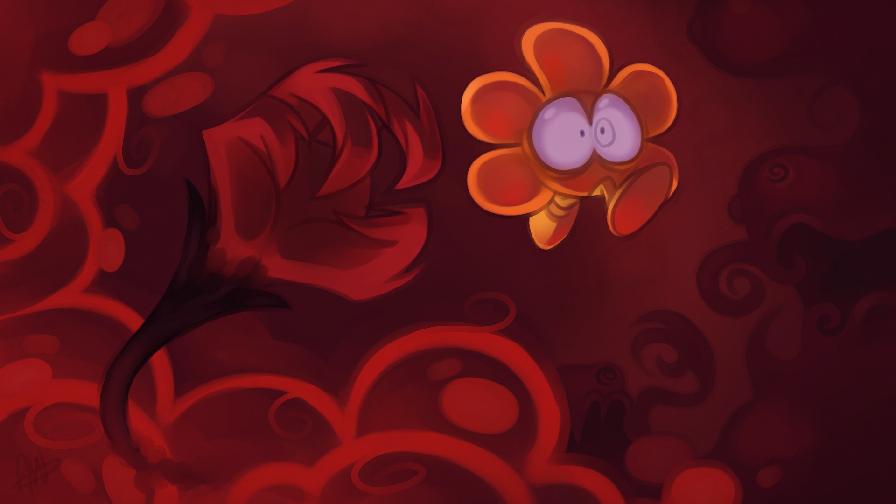
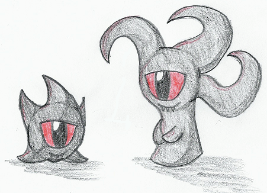
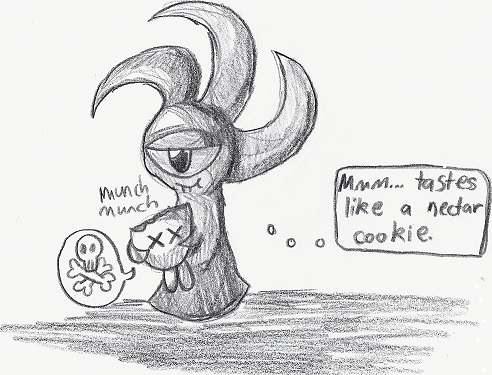
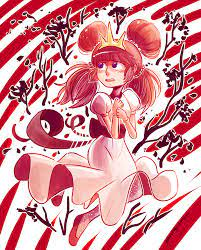
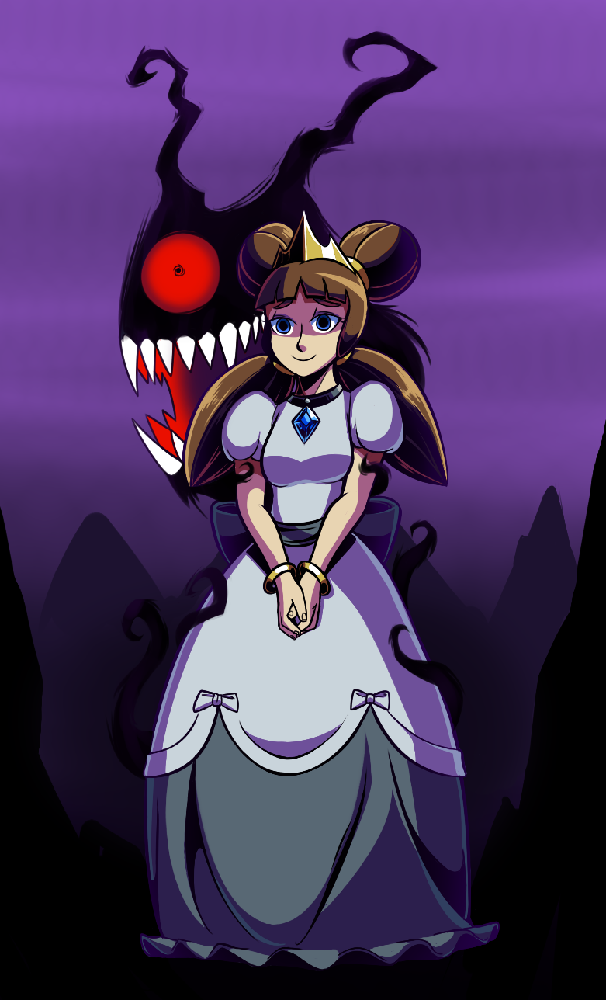

Eversion

This is a game made by the Brits at Zaratustra Productions. It's a Lovecraft platformer game that's cute, then creepy.
It's a theme to make cute look creepier in the run of an indie game. This game is one of those that do these tropes. I'm no reviewer so I'm not trying to critizise Eversion but to talk about a bit and show some fanwork of it from other people. (Which the images belongs to)

This is a nostalgic image to me. It reminds me of the late 10s when DeviantArt had these kind of things. This Traditional drawing is from the site and it's an old sight before the toxicity happened in the community there. In the 2000s and late 10s people did these drawings for fun with little profit and where creative enough to stay trong the whole way. I'm believing that the site had mostly traditional art back then, which is a relieve from the garbage digital fetish art that's more common now.

Now the site is just a battle ground for fetish artists where the purest artist gets occused for simple things. People are leaving the site and there's not much that anyone can do cause no one wants to do anything. This is one of my sad thoughts that creeps in my head, the world got lazier and ignorant. An age where no one cares, so this is why I'm retro.

We sure needed to evolve but there's flawed evolution that must be avoided as well. All the shit in the world is not funny.
And in the future we get Doki Doki Literature Club. I don't pay that much attention to animes so this one didn't get to me. But it's a good thing that Eversion kept on giving and might keep on giving later on.

Index